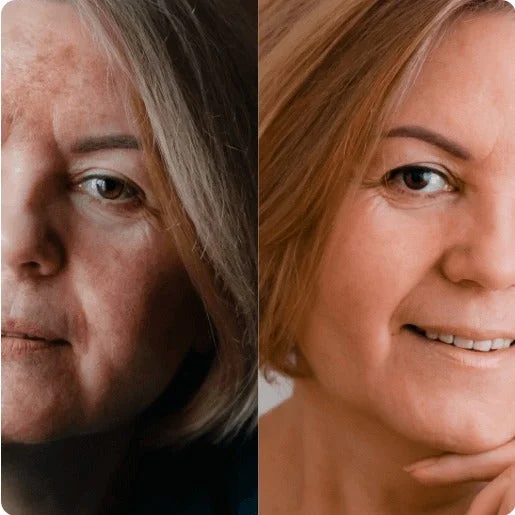
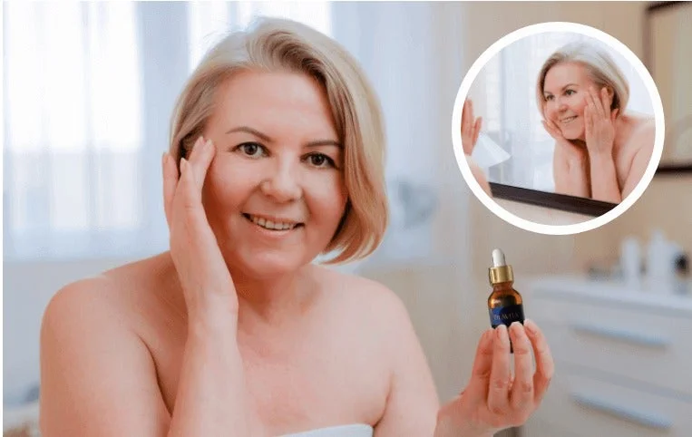
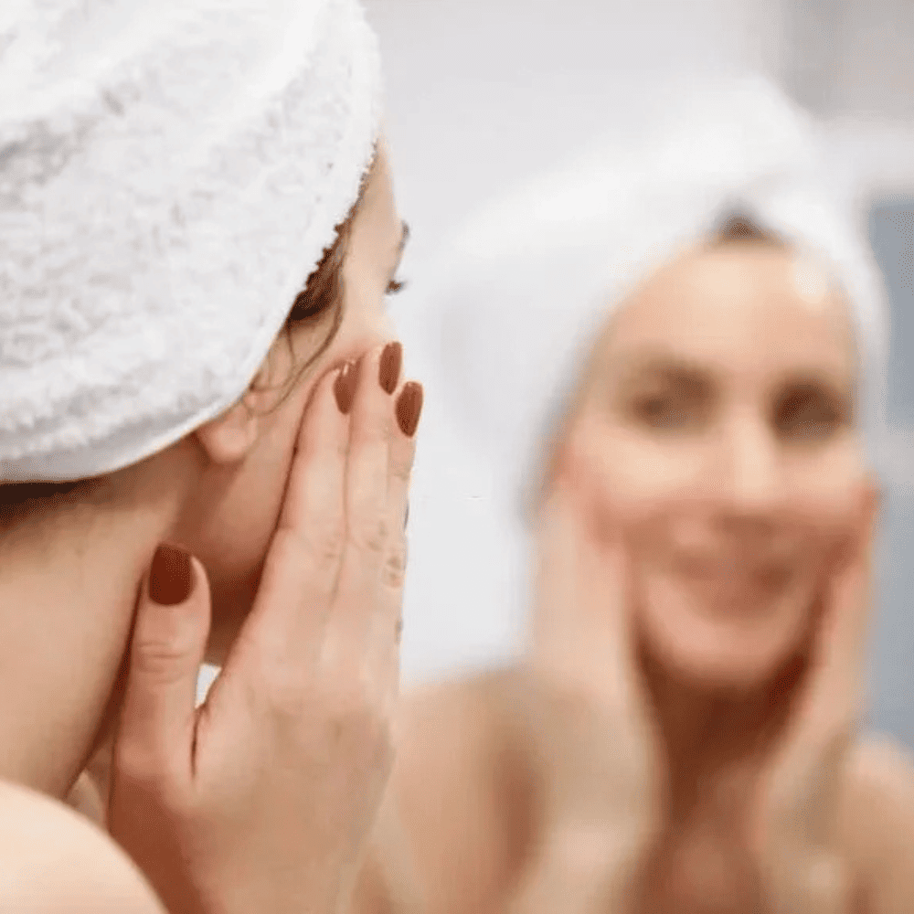
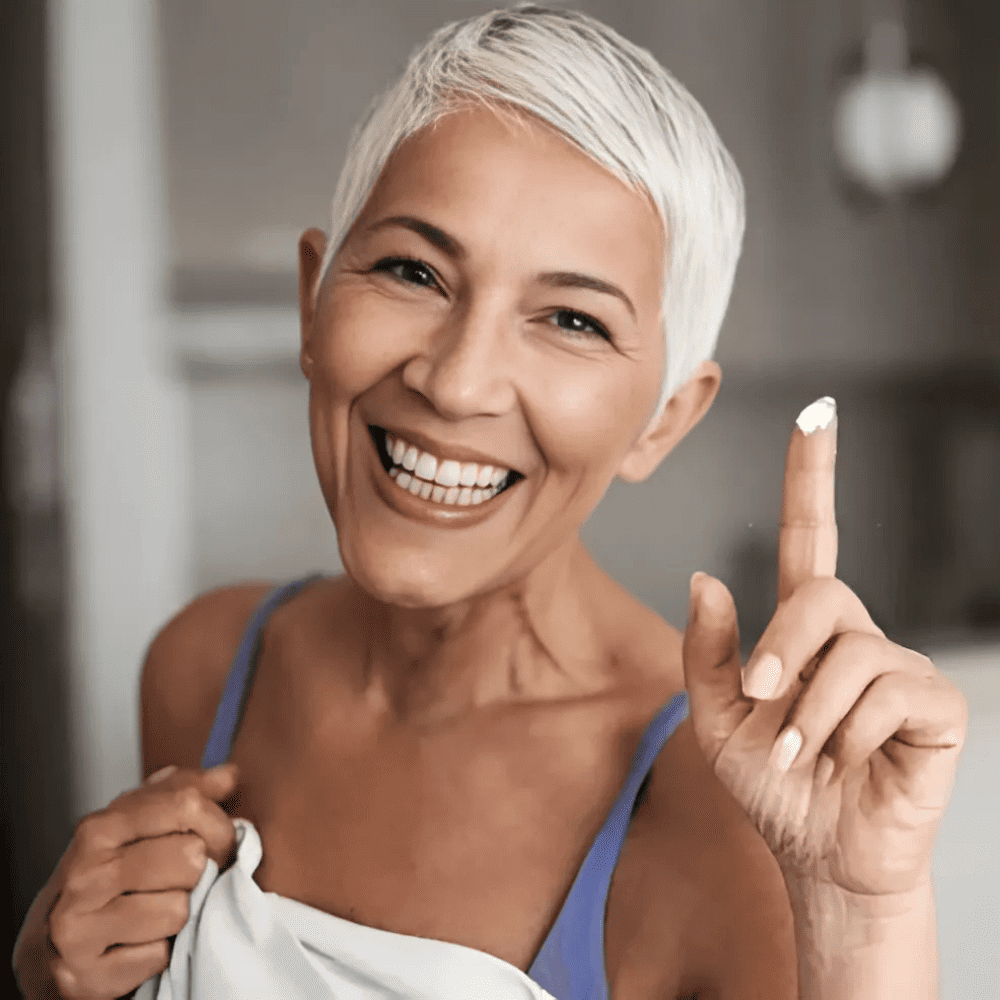
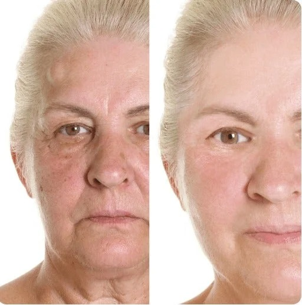
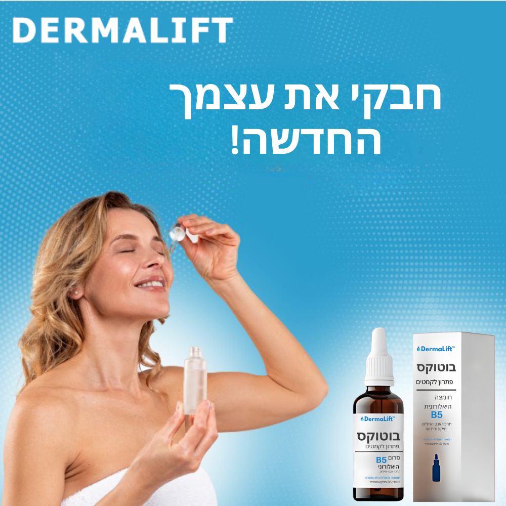
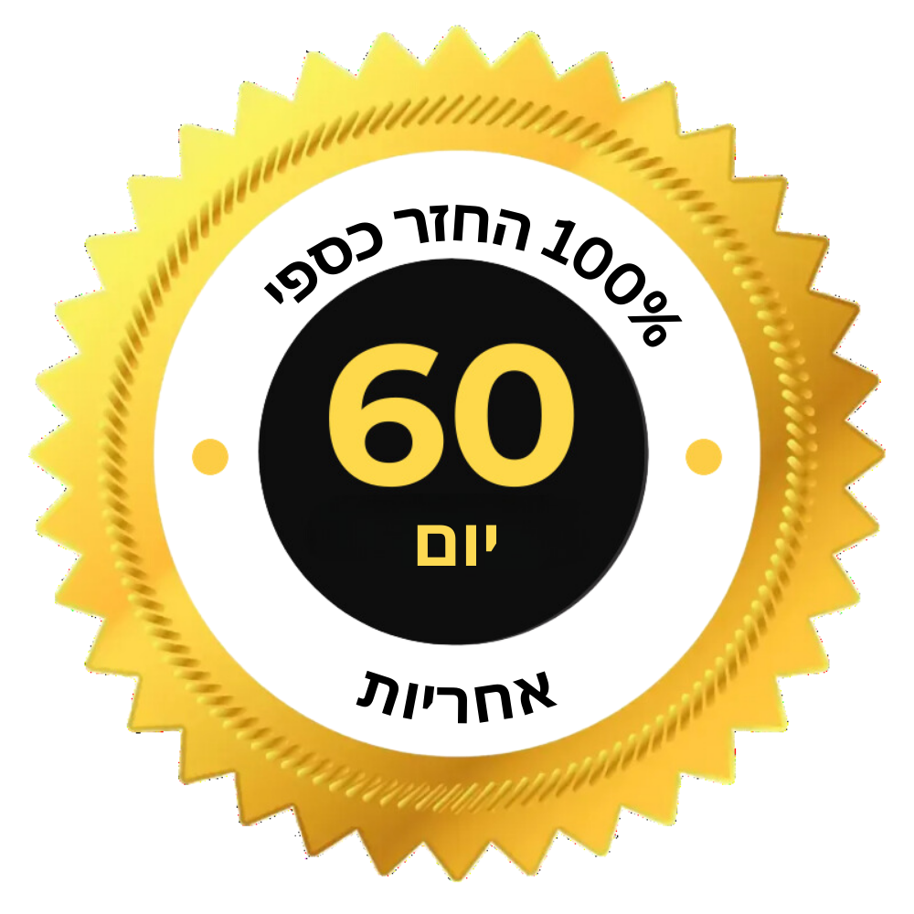

.svg)

דף הבית > בריאות > קמטים וקמטוטים בעור
תגלית מהפכנית משאירה את הדרמטולוגים ללא מילים: קמטים נעלמים בתוך 15 שעות עם הסרום הזה!

"השגנו את הבלתי אפשרי", פותחת נציגת המותג הבלעדי ™DermaLift. והיא צודקת, כי 98% מהקמטים מסביב לעיניים מוחלקים ללא הזרקות בוטולינום טוקסין, דבר שפעם לא היה מתקבל על הדעת. היום זה הפך למציאות - והמטמורפוזה של אישה בת 52 מירושלים, 15 שעות לאחר מריחת הסרום של ,™DermaLift הפכה ויראלית בערוצי הטלוויזיה וברשתות החברתיות בישראל.
סרום ™DermaLift - לוחם קמטים נוזלי לפנים וצוואר.
18 חודשים של מחקר מעבדה אינטנסיבי. 117 חומרים פעילים שנבדקו בפורמולות וביחסים שונים. צוות של 9 מומחים ברפואת עור וקוסמטיקה פיתח את הסרום האנטי-אייג'ינג היחיד שכבר זכה לשבחים בתעשייה כ"בוטוקס נוזלי", הממלא קמטים, מיצוק קווים ורפיון עור תוך 15 שעות בלבד.
האם את מרגישה מבוגרת ממה שאת באמת? האם את שונאת את הקמטים והקמטים המסמנים את העור העדין סביב הפה, הצוואר והעיניים שלך? גלי את מילוי הקמטים המהפכני שמחזיר את הגמישות והחלקות לעור שלך מהשימוש הראשון.
השפעה ביום השני לאחר השימוש בסרום המהפכני DermaLift
אחד האנשים הראשונים שניסו את הסרום המהפכני להפחתת קמטים הייתה חן,
אישה בת 52 מירושלים.
תמונתה הוצגה בטלוויזיה ובאתרים בישראל. עכשיו אנחנו הראשונים להראות
לה.
"נראיתי כמו תפוח ישן ומקומט."
הסיפור של חן נוקב. "לפני שנה נרדמתי על החוף תחת השמש היוקדת. לדברי רופאי עור וקוסמטיקאיות, הקמטים הנגרמים מנזקי השמש האלה הם בלתי הפיכים...
"קמטים וכתמי שמש הפכו אותי לזקנה מקומטת - שנאתי את ההשתקפות שלי."
בשנות הארבעים שלי, קווים התחילו להופיע על הפנים שלי, במיוחד סביב
העיניים והמצח שלי.
זה היה אתגר להסתיר את הקווים העמוקים האלה עם איפור.
אבל לפני שנה, בזמן חופשה בפלורידה, הכל השתנה. כוויות שמש הותירו על
פניי שלפוחיות, עם נזק חמור.
מומחים חשבו שהכוויות יימשכו כל חיי.
"הסרום של ™DermaLift הפך את העור שלי למשיי, מוצק ומתוח תוך שבועיים", אומר הרופא.
כיום אין זכר לקמטים העמוקים ולצלקות על פניה של חן– וזה לא בזכות ניתוחים פלסטיים, טיפולי לייזר או הזרקות בוטוקס.
"אחרי החודשים הראשונים של דיכאון וסירוב לעזוב את הבית, לאט לאט התחלתי להתאושש. קיבלתי תמיכה מבעלי ובנותיי וביליתי יותר ויותר זמן במחקר על מנת להחזיר את המראה שלי לפני התאונה - אפילו שקלתי להוציא הלוואה לניתוח שבו מנתח ינסה לשחזר את העור שלי לפני התאונה.
וכנראה שהייתי נכנסת לחוב של 12,000 ₪- 15,000 ₪
ומתחת לסכין המנתחים, אם צירוף מקרים מקרי של חדשות ואירועים לא היה
עובד לפתע לטובתי. ראשית קראתי על סרום הבוטוקס הנוזלי בפורום מקוון,
ולאחר מכן בתי שלחה לי בקשה ישירה שמצאה באתר היצרן. ההבטחה למלא
ביעילות את הקמטים הצפופים והעמוקים ביותר תוך 15 שעות...
הוזמנתי לבדוק את הסרום המודרני DermaLift!
כל כך התרגשתי כי הרגשתי שזו ההזדמנות שלי להחזיר את האני הישן שלי. דמיינתי את הפנים החדשות שלי נראות חלקות ומשיי, בלי הקווים העמוקים האיומים וכתמי השמש. דמיינתי איך ארגיש כשאסתכל שוב במראה ואראה פנים שנראות תואמות לגילי, בלי השנים הנוספות. התחלתי להאמין שאני עדיין יכול להיות מאושר, שזה באמת יכול לקרות!
"הקמטים והקווים נעלמו לאחר לילה אחד - זה לא היה חלום", אמרה.
"אני יודע שזה נשמע לא יאומן, אבל זה באמת קרה וחוויתי את זה בעצמי. פשוטו כמשמעו:
בדקתי את הסרום החדשני מיד עם קבלת האריזה. בכל יום הייתי צריך לתעד את התוצאות על ידי צילום פניי בשעה 10 בבוקר, 15:00 ו-8 בערב. בהתחלה הופתעתי מתדירות הצילומים, אבל אחרי הערב הראשון הבנתי למה. הפעם הראשונה שמרחתי את הסרום הייתה בערב – לפי המלצת היצרן. קמתי בבוקר ולא האמנתי למראה עיניי. הקמטים היו הרבה יותר קטנים, לא היו עוד קפלים עמוקים, אפילו הקווים העמוקים ביותר נראו שטחיים, ורגלי העורב כמעט נעלמו! נגעתי בפנים שלי באצבעותיי, הסתכלתי על עצמי מכל הזוויות, לא האמנתי לאפקט שזה הראה כל כך מהר וכמעט מיד! בכיתי מרוב שמחה וזו הייתה רק ההתחלה.
זה באמת אני? בלילה הקודם היו לי רגלי עורב סביב העיניים - עכשיו הן נעלמו!
מאותו היום הפנים שלי התחילו להשתנות מיום ליום. כולנו הופתענו מאוד - אני, בעלי והבנות שלי. כמובן, קיוויתי שהסרום הזה יעזור למלא את הקמטים שלי ולגרום לפנים שלי להיראות טוב יותר, אבל ההשפעות האלה היו סוג של קסם שעלה על הציפיות הכי פרועות שלי! בכל בוקר הסתכלתי בפליאה על הפנים שלי שהולכות ומוצקות, שם נעלמו עוד ועוד קמטים, קמטים עדינים ושיזוף. העור מתחת לעיניים שלי נעשה מוצק יותר, צפוף יותר, רך וחלק יותר, כאילו מישהו גיהץ אותו. נפטרתי מעיגולים שחורים ושקיות מתחת לעיניים, אין לי יותר קמטים על הפנים. אפילו הכוויות שהיו אמורות להישאר לנצח התמלאו... אין לי מילים לתאר כמה מאושרת. המטמורפוזה שלי הפתיעה אפילו את יצרני הסרום עצמו, והתמונה שלי הופיעה בערוצי הטלוויזיה, החדשות והאתרים בישראל - זה היה הלם!
חן נפטרה מהקמטים העמוקים והעקשניים ביותר שלה תוך 14 יום ונמנעה מטיפולי בוטוקס. מה עוזר לך הסרום המהפכני ™DermaLift?
הסרום היוקרתי נגד קמטים שהעניק לחן גוון צעיר והסיר כתמי שמש עקשניים הוא תגלית קוסמטית של המאה ה-21 הפועלת בארבע רמות בבת אחת:
1: הפחתת קמטים ב-98% - תוצאות נראות לאחר 15 שעות בלבד.
קמטים מופיעים לראשונה סביב העיניים מכיוון שהעור באזור זה דק מאוד, 0.5 מ"מ בלבד - הוא דק מאוד ואין לו בלוטות חלב או זיעה. מחקרים קליניים אישרו שהסרום המהפכני ™DermaLift ממלא עד 98% מהקמטים בפנים, בשמש ובכוח הכבידה באזור ספציפי זה, המהווה את האפקט הממצק החזק ביותר ומשפר באופן ניכר את גמישות העור סביב העיניים לאחר 15 שעות בלבד לאחר הניתוח. בקשה ראשונה ב-199/200 אנשים.
2: מציג אפקט המדמה בייבי בוטוקס. מסיר קמטים ללא הזרקות או ניתוח!
חווה את היופי של עור חלק וצעיר יותר עם הסרום פורץ הדרך שלנו בהשראת בייבי בוטוקס. נוסחה עוצמתית זו נועדה לחקות את ההשפעות של טיפולים מקצועיים, מוחקת קמטים וקמטוטים ללא צורך בהזרקות או ניתוח. חשפו גוון עור רענן וזוהר ללא מאמץ!
3: מעכב התכווצויות פנים לא רצוניות הגורמות להיווצרות קמטי הבעה. שמור על מראה צעיר עד גיל מבוגר!
מדי יום משתמשים בכ-62 שרירי פנים – לדבר, להביע רגשות, לצחוק, לבכות, לפהק, למצמץ וכדומה. לאחר שנים של אותן תנועות, הקמטים נעשים מוצקים ועמוקים יותר. הסרום המהפכני חוסם התכווצויות עצביות-שריריות בלתי רצוניות, מאזן את טונוס השרירים של העור ומונע קמטי הבעה להתקשות - במיוחד סביב העיניים.
4: מגביר את צפיפות העור עד 87% לאחר מריחה אחת בלבד.
החומצה ההיאלורונית המרוכזת מאוד בסרום ™DermaLift חודרת למטריצה הבין-תאית - סיבי קולגן ואלסטין - המלאים בחלבוני נוער - מהשימוש הראשון. הוא מגביר את המתח, האלסטיות, הצפיפות והלכידות של העור ב-87%, ממלא קמטים עמוקים, מונע הידוק העור, מאזן את הגוון, משפר לחות ומעניק ברק מדהים.
נציג של מותג הקוסמטיקה הידוע ™DermaLift, שכבר השיק סרום אנטי אייג'ינג בלעדי שיחליף את סרום ™DermaLift וכבר זכה בפרסים בשישה כנסים קוסמטיים, אומר את הדברים הבאים על הפופולריות של הנוסחה המהפכנית:
המטרה שלנו לא הייתה ליצור את הקרם הממוצע שלך נגד קמטים. סרום אנטי אייג'ינג יוקרתי זה עם פפטידים מרעננים מספק את אותן תוצאות כמו הזרקת בוטוקס, אך ללא הניתוח. מחקרים קליניים מראים כי קמטים עמוקים, רגלי עורב, שקיות ועיגולים שחורים מופחתים תוך 15 שעות ונעלמים לחלוטין תוך 10-14 ימים, ומשאירים את העור במראה צעיר עד 20 שנה.
- סיגל וייזנברג, רופאת עור ב- ™DermaLift
עור פנים חזק פי 4 - גם בגיל 40 ומעלה.
ללא כאבים, ללא בוטוקס, ללא סימני הזדקנות!

ואני מסכימה!"
הסרום הבלעדי ™DermaLift מוכר ברחבי העולם בזכות יעילותו הפנומנלית, אפילו במרכזי הרפואה האסתטית המובילים ביפן ובאמריקה. צפוי שעד סוף השנה, אחד מכל שלושה אנשים בישראל יבחר ב- ™DermaLift. גלה כיצד להשיג תוצאות מרהיבות תוך 15 שעות בלבד ולהחזיר את המראה הצעיר של לפני 20 שנה.
עור זוהר וחלק בכל גיל - עצור את תהליך ההזדקנות ו"מגהץ" קמטים תוך 15 שעות. הסרום הזה של ™DermaLift ממלא 98% מהקמטים ומונע היווצרות חדשים!
תארו לעצמכם כמה נחמד יהיה להסתכל במראה ולראות עור צעיר, חלק, משיי, מוצק וגמיש, ללא קמטים מסביב לעיניים, ללא רגלי עורב וללא שקיות כחולות מתחת לעיניים. את נראית יפה בלי שמץ של איפור וכשאת הולכת ברחוב עם הבת שלך, אנשים חושבים שאת אחיות. אתה מרגיש יפה מתמיד. אתה משוכנע שהעור שלך לא מסגיר את גילך, אלא נראה זוהר ואחיד - כאילו אתה בן 25. חסכת אלפי יורו, בלי אזמלים ובלי מחטים, הקמטים פשוט נעלמו - את יפה, מחודשת, מושכת ובטוח - זה עושה חשק לחיות, לא?
אז אל תחכו יותר - לנציג של המותג ™DermaLift יש הצעה מיוחדת עבור הקוראים שלנו.
אם את רוצה להסיר במהירות ובקלות גם את הקמטים העמוקים והעקשניים ביותר מסביב לעיניים, וכמו חן - גיבורת הכתבה הזו - לקבל פנים ללא רגלי עורב, קמטים וקפלים, לחץ על הקישור למטה. אתה תופנה לאתר הרשמי של המפיץ שבו תוכל לקנות את נוסחת ההרמה המקורית של אנטי אייג'ינג יוקרתית בהנחה בלעדית. עשה זאת עכשיו לפני שיגמר המלאי.
קבל סרום בלעדי DermaLift עם הנחה מיוחדת והסר קמטי גיל תוך 15 שעות בלבד 👉
™DermaLift הפך להצלחה ויראלית באינטרנט
™DermaLift מתחיל לעשות לעצמה שם וזה לא פלא! אנשים בכל מקום אוהבים את זה! (ל- ™DermaLift יש אפילו יותר מ-2,700 ביקורות 5 כוכבים ⭐⭐⭐⭐⭐)
אנשים אוהבים את ™DermaLift כי לא רק שזה עובד, זה סופר קל לשימוש!
זה כל כך קל ובמחיר סביר שאין ממש סיבה לא להזמין את ה- ™DermaLift שלך מיד! במיוחד מכיוון שאין שום סיכון בניסיון של ™DermaLift. מה שאני אוהב בחברה הזו הוא שהם עומדים מאחורי המוצר שלהם! לא שמח? שלח אותו בחזרה לקבלת החזר מלא. (אבל אתה לא רוצה!)
עד כה לא מצאתי שום דבר שיכול לעזור לי עם הבעיה הזו, ואני כל כך אסיר תודה שמצאתי את ™DermaLift!
אל תחכו יותר מדי להזמין, כי המלאי מוגבל!
הדרך היחידה להשיג ™DermaLift איכותי אמיתי היא דרך האתר שלהם כאן.
ישנם זיופים וחיקויים שלא עובדים באותה מידה, אז הזמינו מהאתר הרשמי שלהם כדי להבטיח שתקבלו את המוצר האותנטי בפעם הראשונה!
אבל עכשיו...
עודכן ביום שלישי 18 ביוני
מאז השקתו המקוונת, ™DermaLift עשתה השפעה מדהימה, עם יותר מ-763,419 יחידות שנמכרו. בשל הפופולריות והביקורות החיוביות שלו, החברה כל כך בטוחה במוצר שהם מציעים כעת ערבות שביעות רצון של 60 יום ו-50% הנחה עד גמר המלאי. לחץ על הכפתור למטה כדי לקבל את ההנחה שלך.
אחריות להחזר כספי תוך 60 יום
נסי את ™DermaLift ללא סיכון
אנחנו כל כך בטוחים ביתרונות של המוצר שלנו שאנחנו מציעים ערבות לשביעות רצון מלאה למשך 60 יום. אם אינך רואה שיפור, אנו נחזיר את מלוא סכום הרכישה - ללא שאלות.
מבצע מיוחד:
50% הנחה היום בלבד!

מוכנים להחזיר לעצמכם את עורכם הצעיר והזוהר?
פעל עכשיו וגלה כיצד ™DermaLift יכול לשנות את המראה שלך על ידי טיפול בקמטים באופן טבעי ויעיל.
יש לך שאלות? לנו יש תשובות!
מרחו כמות קטנה מהסרום על עור נקי ויבש. עסו אותו בעדינות לאזורים שבהם אתם רוצים להפחית קמטים וקמטוטים. השתמש בו פעמיים ביום, בוקר וערב, לקבלת התוצאות הטובות ביותר.
כן, הסרום מנוסח עם מרכיבים איכותיים וידידותיים לעור בטוחים לשימוש יומיומי. זה נועד להיות עדין על העור שלך תוך מיקוד יעיל לקמטים וקמטוטים.
אתה יכול לצפות לראות שיפורים גלויים במראה העור שלך תוך 15 שעות מהשימוש. לתוצאות מיטביות, המשך להשתמש בסרום כחלק משגרת הטיפוח היומית שלך.
קח שליטה על העור שלך היום
אל תתנו לקמטים להגדיר את המראה שלכם. נסה את ™DermaLift עכשיו והצטרף לאלפים שגילו פתרון טבעי לשיקום עור צעיר וחלק ולהגביר את הביטחון העצמי שלהם.

ביקורת מאומתת, 59 דנה שוורץ,
דירוג: ⭐️⭐️⭐️⭐️⭐️
"מעולם לא ראיתי את העור שלי נראה חלק כל כך! הקמטים העדינים סביב העיניים שלי כמעט נעלמו."
רגבה יחיא , 35 ביקורת מאומתת
דירוג: ⭐️⭐️⭐️⭐️⭐️
"הסרום הזה זה שינוי ענק. הקמטים שלי רכים באופן ניכר, והעור שלי מרגיש לח להפליא."
סשה פלדמן, 47 ביקורת מאומתת
דירוג: ⭐️⭐️⭐️⭐️⭐️
"הייתי סקפטית בהתחלה, אבל התוצאות מדברות בעד עצמן. העור שלי נראה יותר צעיר וזוהר".